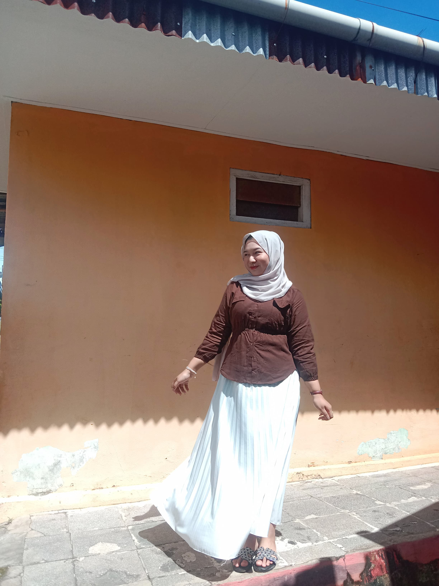

Nama : Annisa Fadillah
NPM : E1G022094
Program Studi :Teknologi Industri Pertanian
Instansi :Universitas Bengkulu
Email :annisafadilla0210@gmail.com
Asal : Kota Bengkulu
Hobi : Masih nyari
Foto :
| Hari | Jam | Mata Kuliah | Dosen | Ruangan |
|---|---|---|---|---|
| Senin | 08.00 - 09.40 | Komputer & Pemograman | Arina Fatharani, S.TP., M.Sc. | Diklat 3 R.20 | Fitri Yuwita S, S.TP., M.P. |
| 10.00 - 11.40 | Teknik dan Tata Cara Kerja | Dr. Yazid Ismi Intara, S.P., M.Si. | GB 1 R.14 | Fitri Yuwita S, S.TP., M.P. |
| Arina Fatharani, S.TP., M.Sc. | ||||
| 14.00 - 15.40 | Karya Tulis Ilmiah | Prof. Dr. Ir. Yuwana, M.Sc. | GB 1 R.4 | |
| 16.00 - 17.40 | Manajemen Sumberdaya Manusia | Ir. Lukman Hidayat, M.P. | Diklat 3 R.22 | Fitri Yuwita S, S.TP., M.P. |
| Wica Elvina, S.TP., M.Si. | ||||
| Rabu | 08.00 - 09.40 | Statistika Industri | Ir. Laili Susanti, M.Si. | GB 1 R.2 | Evanila Silvia, S.TP., M.Si. |
| 10.00 - 11.40 | Pengukuran dan Instrumentasi | Drs. Bosman Sidebang, M.P. | GB 1 R.10 | Firmansyah, S.T., M.Sc. |
| Dr. Yazid Ismi Intara, S.P., M.Si. | ||||
| Kamis | (Ketentuan Dosen) | Studi Lapangan Industri | Ir. Lukman Hidayat, M.P. | GB 1 R.4 |
| 10.00 - 11.40 | Sistem Penanganan dan Transportasi Produk Pertanian | Prof. Dr. Ir. Yuwana, M.Sc. | GB 1 R.4 | |
| Jumat | 08.00 - 09.40 | Teknologi Hasil Perkebunan | Dr. Yazid Ismi Intara., S.P., M.Si | GB 1 R.9 | Sri Wulandari., S.T.P., M.Sc |